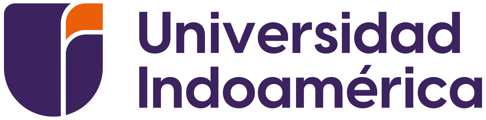
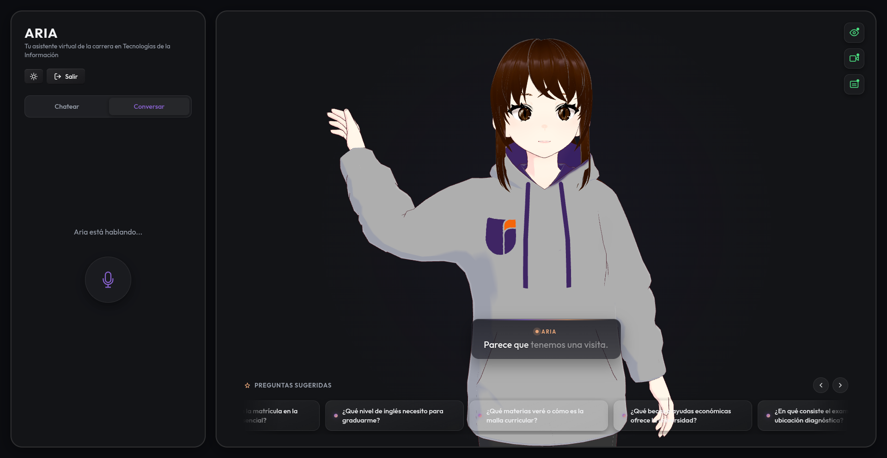
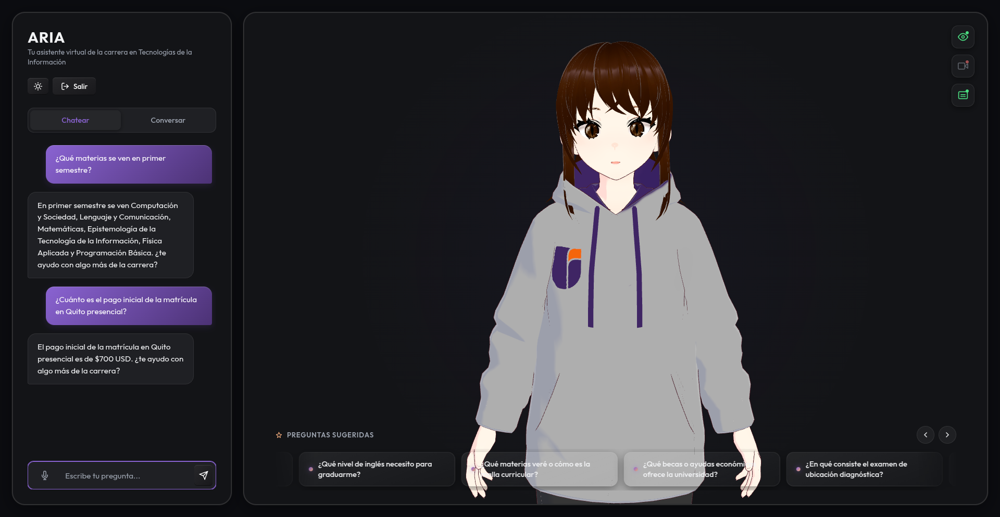
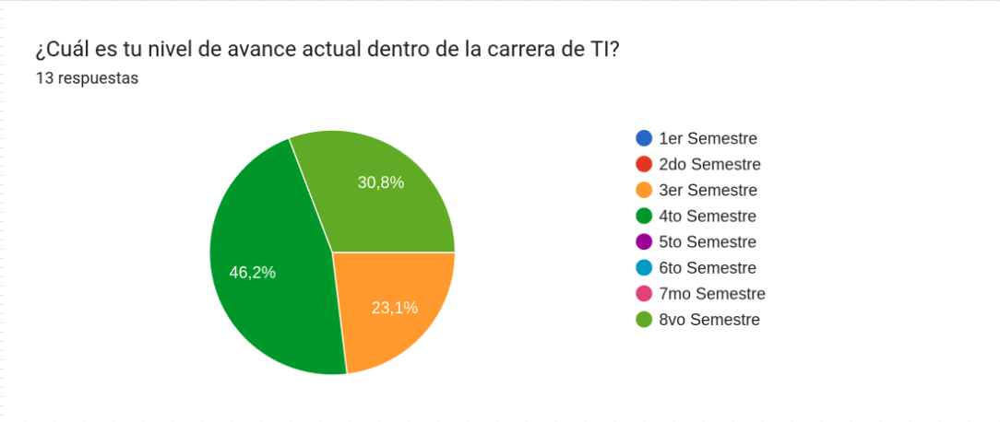
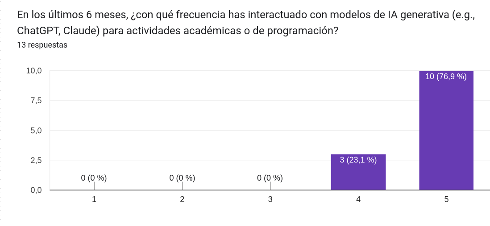
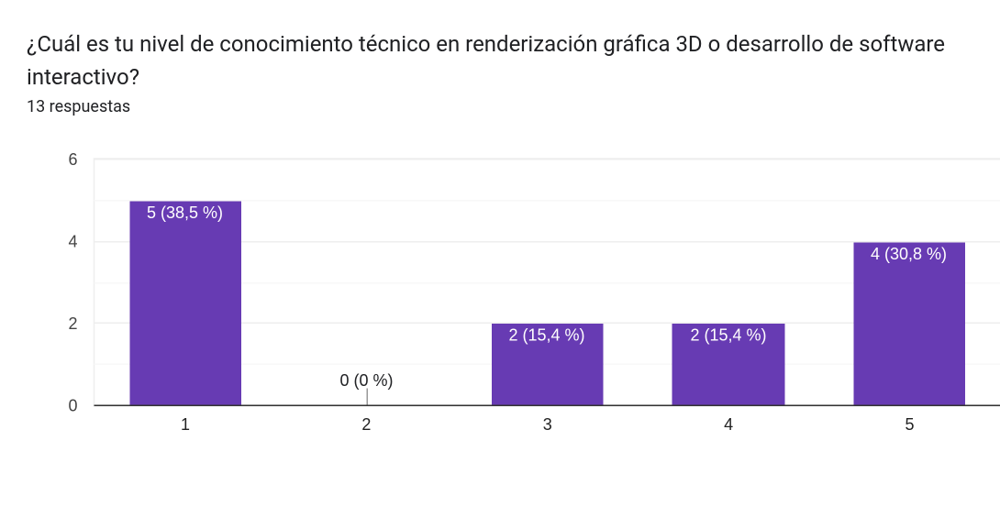
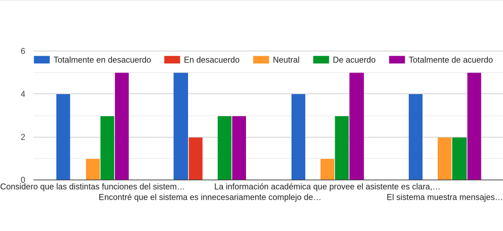

Desarrollo de un prototipo de asistente virtual inteligente con interfaz de avatar 3D y visión artificial para la difusión de información académica de los estudiantes de una institución educativa.
Contenido
- 01Contexto y planteamiento del problema
- 02Estado del arte y aporte
- 03Metas y justificación
- 04Fundamentación teórica
- 05Marco metodológico y planificación
- 06Diseño de la solución (arquitectura)
- 07Implementación y resultados
- 08Conclusiones y recomendaciones
Contexto: La era de la información universitaria.
La carrera de TI administra un volumen de documentos enorme y disperso — y el estudiante de hoy no tiene paciencia para buscarlo a mano.
- 01Documentación extensa
Mallas curriculares, sílabos, reglamentos de titulación y prácticas preprofesionales conviven en decenas de documentos.
- 02Formatos estáticos
La información oficial se distribuye en PDFs, repositorios institucionales, correos y tableros físicos.
- 03Nuevas expectativas
El estudiante moderno exige inmediatez y precisión en la obtención de respuestas.
Problema vs. Consecuencias
Pasa el cursor sobre cada problema para ver su consecuencia.
Dispersión de la Información
Los datos están regados en decenas de PDFs y reglamentos largos. El estudiante se frustra, desiste de buscar y acude a soporte humano saturándolo.
Latencia en la Atención
Los canales oficiales operan solo en horario de oficina y tienen alta demanda. Retrasos de días en trámites críticos como pagos o matriculación.
Sistemas Rígidos
Los bots actuales usan menús fijos y no entienden lenguaje natural. Cero empatía, bucles infinitos y nula resolución de problemas complejos.
El aporte del proyecto: Aria, un asistente especializado y no generalista.
Entrenado exclusivamente con los documentos oficiales de la carrera, y diseñado para acercarse al estudiante en vez de esperarlo.
- ◆Especialización
Conocimiento cerrado a los archivos oficiales de la carrera de TI.
- ◆Interacción Multimodal Completa
Se adapta a las preferencias del estudiante: ofrece tanto una interfaz conversacional por voz (sin necesidad de teclado o ratón) como una interfaz tradicional de chat en texto.
- ◆Privacidad y fiabilidad
Motores locales y RAG para garantizar cero alucinaciones y total privacidad de las consultas.
¿Por qué vale la pena este desarrollo?
Tres razones que conectan lo técnico con lo institucional. Pasa el cursor para profundizar.
Innovación educativa
Posiciona a la carrera a la vanguardia tecnológica, usando IA generativa de forma ética y aplicada.
Eficiencia operativa
Libera horas de trabajo administrativo en las secretarías, automatizando consultas repetitivas.
Accesibilidad
Transforma documentos densos de 50 páginas en respuestas conversacionales, inmediatas y en español natural.
Alcance: Lo que el asistente sí domina
Pasa el cursor sobre cada área para explorar el conocimiento parametrizado.
Información Institucional
Ubicación de campus, títulos y especializaciones ofrecidas, e información relevante sobre los niveles y exámenes de suficiencia de inglés.
Malla Curricular
Estructura de 8 niveles, progresión desde lógica básica hasta ciberseguridad, y horas de vinculación comunitaria.
Homologación
Las 4 vías de convalidación: Análisis comparativo, Examen práctico, Trayectoria profesional (10 años), y Suficiencia B1 en Inglés.
Becas y Beneficios
Becas por acción afirmativa (vulnerabilidad), rendimiento académico, deportivo y el descuento del 5% por liquidez financiera.
Objetivos de la investigación
Desarrollar un prototipo de Asistente Virtual Inteligente, provisto de una interfaz de avatar 3D y visión artificial, para optimizar la difusión proactiva y el acceso a la información académica de los estudiantes en la carrera de Ingeniería en Tecnologías de la Información de la Universidad Tecnológica Indoamérica.
Fundamentos Teóricos: RAG, el puente entre el LLM y los datos.
Pasa el cursor por cada bloque para ver cómo se transforma la información en conocimiento.
1. Pregunta
El estudiante realiza una consulta natural y ambigua. Ej: "¿Cómo me titulo?"
2. Búsqueda
ChromaDB localiza los párrafos del reglamento que son matemáticamente similares a la pregunta.
3. Inyección
El LLM recibe la pregunta + los párrafos exactos recuperados, creando un "contexto cerrado".
4. Respuesta
El modelo redacta una respuesta fiel y empática, sin inventar absolutamente nada.
Fundamentos Teóricos: Base de datos vectorial y Similitud del coseno.
ChromaDB no guarda texto plano: convierte cada oración en un vector de cientos de dimensiones. Un ángulo θ estrecho entre dos vectores significa el mismo significado semántico, aunque usen palabras distintas.
Metodología de Investigación: Ciencia de Diseño (DSRM).
El proyecto se orienta al diseño, construcción y evaluación de un artefacto tecnológico (DSRM).
Diagnóstico de la dificultad de acceso a mallas y reglamentos en la UTI.
Levantamiento de requerimientos funcionales y no funcionales.
Diseño modular cliente-servidor (Visión, Voz, Avatar, LLM).
Desarrollo del prototipo funcional e integración multimodal.
Métricas técnicas (latencia, recursos) y encuestas con estudiantes.
Elaboración del Trabajo de Titulación y anexos técnicos.
Fases de Desarrollo (DSRM): De los PDFs a la plataforma.
Requerimientos del sistema: Lo que hace y cómo debe hacerlo.
- • Detección no biométrica de presencia.
- • Transcripción de voz a texto (STT) en tiempo real.
- • Búsqueda semántica vectorial.
- • Privacidad por diseño: no guardar fotos ni audios.
- • Baja latencia operativa.
- • Tolerancia a fallos y alta disponibilidad (WebSockets).
Arquitectura: Cliente-servidor totalmente desacoplado.
Diagrama de contexto Nivel 0: El sistema como caja negra.
El estudiante provee estímulos; el Asistente orquesta STT y TTS con APIs externas y responde con audio + avatar. El SGA es solo la fuente original de los documentos — el sistema opera desconectado de él.
Visión artificial: Detección rápida y optimizada
Pasa el cursor sobre cada tarjeta para ver los detalles de la implementación.
Idea inicial descartada
El uso de redes profundas de reconocimiento facial consumía demasiada CPU/GPU y no era viable para hardware limitado de un kiosco.
Solución adoptada
Se optó por un Bounding Box ligero que sólo detecta la presencia del rostro en píxeles. Si el usuario se acerca, asume intención de hablar.
¿Cómo funciona?
Utiliza TensorFlow.js y MediaPipe. Al detectar un rostro, activa el micrófono; si el rostro sale del cuadro, pausa la escucha para ahorrar recursos.
El motor cognitivo (RAG): El flujo obligatorio del conocimiento.
Comunicación Bidireccional: ¿Por qué WebSockets supera a REST?
La conexión se cierra al terminar. Si mandas un audio largo, la interfaz del estudiante se congela hasta que el servidor devuelva todo el audio procesado de golpe.
El "túnel" nunca se cierra. El estudiante manda pedacitos de audio, y el Asistente empieza a hablar mientras todavía está procesando el final de la oración.
El ciclo de vida del avatar y sus interacciones
3D
Estado activo
Diagrama de secuencia: La orquestación en tiempo real
Interfaces Desarrolladas: Módulos y pantallas del Sistema Aria.

Interfaz Multimodal (Avatar 3D + Voz)

Interfaz Textual (Chat Tradicional)
Implementación: Prevención de alucinaciones con contexto estricto.
Los LLMs tienden a inventar respuestas con gran seguridad cuando no saben algo. La solución: nunca dejarlos responder sin evidencia.
Prohíbe taxativamente inferir datos no presentes en el contexto.
Si los documentos recuperados tienen baja similitud coseno, el sistema intercepta la petición.
"No dispongo de información reglamentaria para responder esto."
Resultados · Latencia operativa: Respuesta fluida de solo 1.25 segundos.
Este tiempo mide todo el ciclo: desde que el estudiante termina de hablar, hasta que el avatar comienza a responderle en voz alta. El estándar de alta calidad exige menos de 1.5 segundos para sentir que se habla con alguien real.
Evaluación de Usabilidad (N=13): Alta percepción de integración y eficacia (SUS).
Las encuestas a estudiantes de diferentes semestres demostraron que consideran natural interactuar mediante IA.
- ✔Usabilidad General
Predominan valoraciones positivas en la claridad de información (Hit Rate >90%).
- ✔Antropomorfismo
La apariencia humana e interfaz 3D reduce la ansiedad institucional, sintiéndose natural y amigable.




Contraste Cuantitativo: Tiempo de Atención: Sistema Actual vs. Aria.
Búsqueda manual vs Conversación vocal
Correo a secretaría vs WebSockets locales
Búsqueda literal vs Vectorial (Hit Rate)
Conclusiones: Resultados de los objetivos planteados.
- 01Base de conocimiento sólida
El análisis de procesos permitió determinar los requerimientos y establecer exitosamente la base de conocimiento con reglamentos y mallas.
- 02Arquitectura integrada
El diseño modular logró una integración fluida de RAG, voz y avatar 3D en tiempo real usando WebSockets.
- 03Prototipo funcional eficiente
Se implementó un sistema plenamente operativo que combina modelos de lenguaje locales (LLMs) con visión artificial ligera.
- 04Alta usabilidad comprobada
Las pruebas demostraron una latencia ultrabaja y un alto nivel de satisfacción (SUS), validando la eficacia del sistema con estudiantes.
Gracias por
su atención.
Espacio abierto para la ronda de preguntas y el debate técnico con el honorable tribunal.